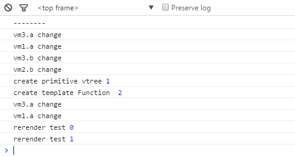

在avalon2，还提供了一个工厂来合并两个vm：
var vm1 = avalon.define({
$id: 'test',
a: 111
});
vm1.$watch('a', function(){
console.log('vm1.a change');
});
var vm2 = avalon.define({
$id: 'test2',
b: 222
});
vm2.$watch('b', function(){
console.log('vm2.b change');
});
var vm3 = avalon.mediatorFactory(vm1, vm2);
vm3.$watch('a', function(){
console.log('vm3.a change');
});
vm3.$watch('b', function(){
console.log('vm3.b change');
});
console.log('--------');
vm3.a = 22;
vm3.b = 44;
{{@a}}
在chrome控制台中依次打印如下：

有人可能不理解为什么输出6次，我们先忽视调试信息。
avalon.mediatorFactory是一个重要的方法，是实现ms-controller套嵌的关键，大家有兴趣的话可以看看其源码。
| 顶层vm | masterFactory | 供用户操作与保存回调与同步视图 |
| 子vm | slaveFactory | 承载更多用户数据 |
| 监控数组 | arrayFactory | 承载更多用户数据 |
| 内部vm | mediatorFactory | 容纳多个vm的数据与回调，并作为参数传入$render方法，生成新的虚拟DOM树 |